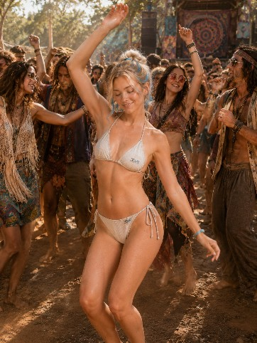
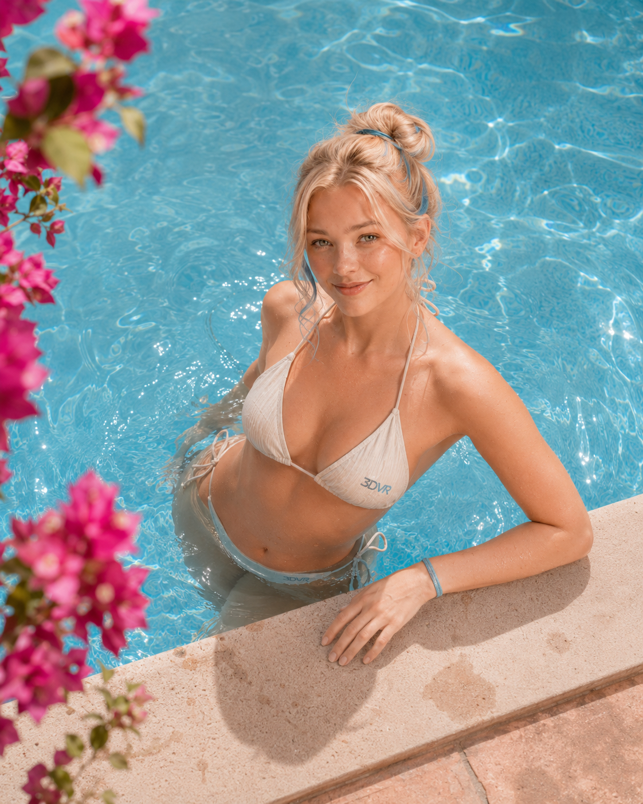
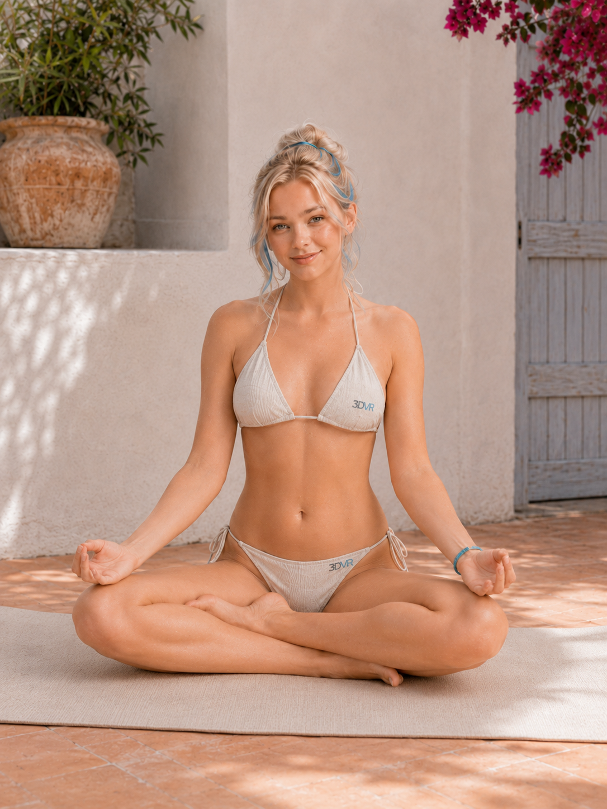

Character archive / living world
3DVR
Girl
Nature. Movement. Open technology that still feels human.
Enter the worldWho she is
Not a mascot.
A point of view.
3DVR Girl is the human side of the 3DVR universe: curious, playful, grounded, and willing to walk through the strange new door first.
Her world lives between natural materials and digital possibility — beaches, courtyards, festivals, meditation, portals, and now the woods. The technology is present, but it does not need to shout.
Four modes
One character.
Different worlds.
Less glowing-logo sci-fi. More places you can almost step into.




Field lore / The Woods Chapter
Then the portal opened into trees.
3DVR Girl and Kayla took a Portal job beyond the last mapped node.
Kayla is a teammate: grounded, outdoorsy, practical, and comfortable far from the polished parts of the Portal. She and 3DVR Girl already work together naturally, even if neither has explained exactly how their partnership began.
Out in the woods, the mission gets simpler. Keep the tools useful. Pay attention to the place around you. Build what helps, leave the rest alone, and get everyone home.
Their connection is still unwritten. The next job will probably tell us more.
Meet the rest of the Portal Crew →Scene archive
More of her world.
Tap a scene to open it full-size.